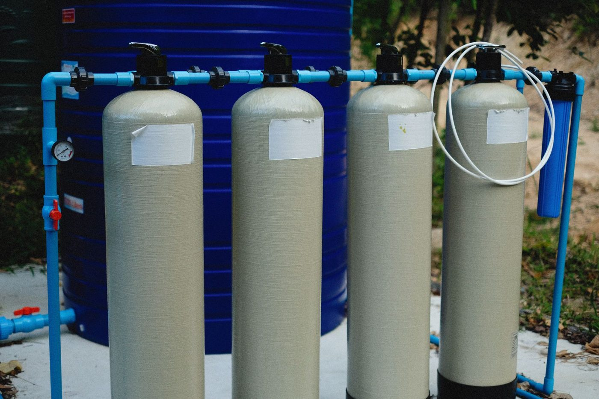
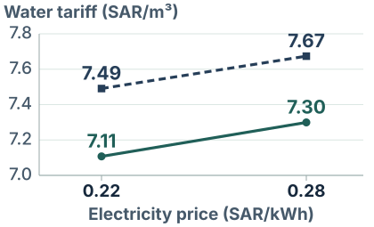

Decisions.
SHARAKAT · AUGUST–NOVEMBER 2026
SHARAKAH
Graduate Development Program
I studied water infrastructure from the off-taker’s perspective—and put that learning into practice in a winning simulated PPP case.
Explore the case & tariff simulator
THE LEARNING JOURNEY
Seeing the whole project.
I studied how technical feasibility, project finance, procurement, payment mechanisms, and risk allocation shaped decisions for the organization buying the water. Excel supported scenario modeling; Power BI training supported clear reporting.
AL-SAHIL / SIMULATED PPP CASE
A decision with trade-offs.
Our team compared conventional seawater reverse osmosis, modular SWRO, and a thermal hybrid. I modeled the impact of electricity prices on water tariffs in Excel. Our multidisciplinary team evaluated the options, recommended Option A, and won the hackathon.
Option A offered full capacity from the start and remained cheaper than fully expanded Option B in the modeled comparison. Option B used less electricity per cubic metre.
INTERACTIVE CASE EXPLORER
What happens when electricity costs change?
Change electricity prices and the payment deadband. Full-cost tariffs show the cost impact; indexed-payment tariffs show the modeled adjustment after the deadband.
How electricity prices affected the modeled water tariff
Model assumptions & verified data
Source-model energy intensity: A 3.20 and expanded B 3.05 kWh/m³. Non-electricity costs, output, and all other assumptions stay fixed. Full-cost tariff = baseline tariff + energy intensity × (electricity price − 0.22). Baseline tariffs are 7.1072876712 and 7.4907421434 SAR/m³.
Indexed payment applies only to the price change beyond the selected percentage of the baseline electricity price. This is a simplified sensitivity of the case payment rule, not a new procurement recommendation. Expanded B represents a full year after expansion acceptance.
| Electricity (SAR/kWh) | A | Expanded B |
|---|---|---|
| 0.22 | 7.11 | 7.49 |
| 0.28 | 7.30 | 7.67 |
Sources: AlSahil 4.0.xlsx, E2 Energy Challenge; Al Sahil Unified Final.pptx, slide 8. Final team recommendation: slides 26 and 28.

Representative water-treatment photo by Alexey Demidov / Pexels; not the simulated Al-Sahil plant.